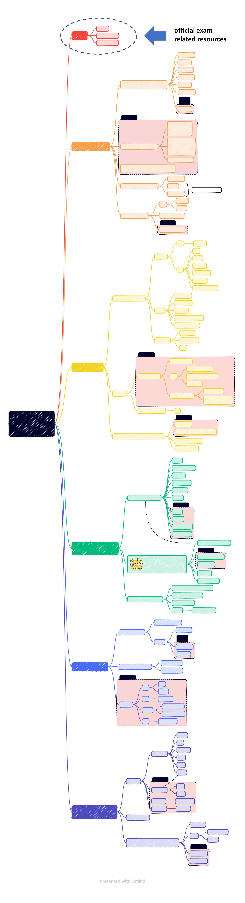

not covered
not covered
not covered
not
covered
not covered
not
covered
not covered
not covered
not covered
not covered
not covered
AWS Certified
Developer -
Associate
Security (26%)
Refactoring (10%)
Monitoring and
Troubleshooting (12%)
AWS API authentication IAM
encryption
application authentication and authorization
optimize applications
migrate existing application
root cause analysis on faults found in testing
or production
Links
Deployment (22%)
existing CI/CD pipelines, processes, and
patterns
CodeCommit
using AWS Elastic Beanstalk
concepts
- application
- application version
- environment
deployments strategies
- all at once
- rolling
- rolling with batch
- immutable
health and monitoring
application deployment package
dependencies
configuration
serverless applications
SAM
exam
at rest / in transit
server side / client side
stages in API gateway
package
based on requirements
rump up guide
practice exam
Certificate Manager
CodeBuild
CodeDeploy
CodePipeline
Code Star
template
process
SSL certificates
integrations ELB,
Api Gateway, CloudFront
S3
Development with AWS
Services (30%)
build serverless applications
requirements into application design
using APIs, SDKs, and AWS CLI
lambda
DynamoDB streams
S3 performance tuning
caching
Api Gateway
CloudFront
Cognito Sync
developer-authenticated identities
Cognito Identity Pools
Cognito User Pools
identities
user
role
user
service
federation
cross account
STS - to assume role
polices
resource base
identity based
boundaries
aws / customer managed
creadentials
access keys
log in password
short term
long term
structure, evaluation
S3 events
Api Gateway
Kinesis
externalize state
horizontal scaling
CloudWatch
X-ray
Route 53 logs
monitoring
CloudWatch
metrics
logs
alarm
CI/CD logs analysis
looking for credentials precedence
Code Guru
containers
ECS
EKS
Fargate
Elastic Cache
Step Functions
cloud9, cloudshell, toolkit
installation, usage
ELB, ASG, EC2, EBS, AMI, EFS, VPC, RDS, Route
53
MFA
benfits
events
AppSync
Parameter Store
Secret Manager
EventBridge
low level / high level
Code Artifact
task
service
envelop encription
KMS
import, create, rotate
access control, auditability
integrations
instrument code
rules
buses
Cloud Trail
traicing
AWS Config compliance
AWS api access
ECR like docker hub
compute capacity
more flexible sizes
kubernetes
Cognito
stateless Lambda
DynamoDB
Elastic Cache
messaging (SQS, SNS)
design into application code
VPC flow logs
agent
dashboard
Cloud Formation, CDK